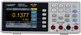
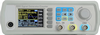
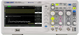
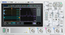

<mat-accordion class="headers-align" multi>
  <mat-expansion-panel [expanded]="true">
    <mat-expansion-panel-header>
      
      <mat-panel-title> XPM1241 </mat-panel-title>
      <mat-panel-description> Owon Benchtop Multimeter </mat-panel-description>
    </mat-expansion-panel-header>
    <app-xdm1241></app-xdm1241>
  </mat-expansion-panel>
  <mat-expansion-panel [expanded]="true">
    <mat-expansion-panel-header>
      
      <mat-panel-title> JDS6600 </mat-panel-title>
      <mat-panel-description>
        DDS Signal Generator/Counter
      </mat-panel-description>
    </mat-expansion-panel-header>
    <app-jds6600></app-jds6600>
  </mat-expansion-panel>
  <mat-expansion-panel [expanded]="true">
    <mat-expansion-panel-header>
      
      <mat-panel-title> SDS1502DL </mat-panel-title>
      <mat-panel-description> Siglent Oscilloscope </mat-panel-description>
    </mat-expansion-panel-header>
    <app-sds1052></app-sds1052>
  </mat-expansion-panel>
  <mat-expansion-panel [expanded]="true">
    <mat-expansion-panel-header>
      
      <mat-panel-title> DSO804 </mat-panel-title>
      <mat-panel-description> Rigol Oscilloscope </mat-panel-description>
    </mat-expansion-panel-header>
    <app-dho804></app-dho804>
  </mat-expansion-panel>
</mat-accordion>
